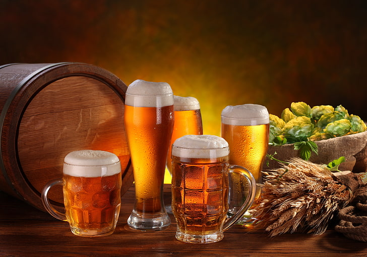

Beer
The subtance that sustains

From left to right, a bimbled mug, a weizen weissbier,
a chalice, a tankard, and an imperial pint.
The Known History of Beer
- Date, civilization, geography, consistency/content/flavor, attitude,
impact on future beer.
- 7000 BCE - First recorded brew in ancient China
- 4000 BCE - Sumerians of Mesopotamia brews the beer that we know today.
Beer in Mesopotamia was a daily dietary staple; paintins, poems, and myths
depict Mesopotamiams enjoying beer (thick at the time, like porridge) through a
straw in order to filter out bread and herbs that would be soaking in the drink.
It was thought that the Sumerians or Babylonians invented the straw specifically
for drinking beer.
- 3000 BCE - Babylonians produce over 20 different types of beer. Beer was
considered divine in Babylon as a gift from the Gods. The Code of Hammurabi
decreed a daily beer ration.
- 1500 BCE - Egyptians brew beer in reverence of their beer goddess, Tenenit.
Worked on making their beer less bitter.
- 3 CE - Brewing techniques make their way to Greece and Rome, and slowly rise in
popularity to rival wine. Beer was the drink of the common folk and soldiers.
- Middle Ages - Rome brings beer to Europe. Monasteries brew beer for monks to
drink as a source of nutrition during times of fasting. Beer helped monasteries
survive by making them money.
- 1000 AD - Hops are introduced, refining taste by making beer less bitter and
shaping the beer into the beer that we know today. Usage of hopes spread throughout
Europe.
- 1000 AD - Commercial brewing begins in Germany, England, and Austria.
Although Germany has been brewing since 800 BCE, calling their beer "ale".
Large quantities of beer discovered in tomb near Kulmback. Germany soon
sets beer standard for Europe because they served their beer cold and tasty.
- Dark Ages - England drinks beer because their water was too dirty.
- 1800 - Germany law included approved ingredients for beer. In 1800s, yeast was
discovered and added to the approved list. Germany also had a daily beer ration
and considered the drink a necessary staple to their diet. 1810 - Octoberfest
is held for the first time in Munich.
- Today - beer is still a daily staple of most people's diets.
- Sources: https://www.brewscruise.com/blog/where-did-beer-originate-from/ |
“I am a firm believer in the people. If given the truth, they can be depended upon
to meet any national crisis. The great point is to bring them the real facts, and
beer.”
-- Abraham Lincoln
“Fill with mingled cream and amber,
I will drain that glass again.
Such hilarious visions clamber
Through the chambers of my brain.
Quaintest thoughts — queerest fancies,
Come to life and fade away:
What care I how time advances?
I am drinking ale today.”
-- Edgar Allen Poe
"Let no man thirst for good beer."
-- Sam Adams
"For a quart of ale is a dish for a king."
-- William Shakespeare
Read more about the subject here.